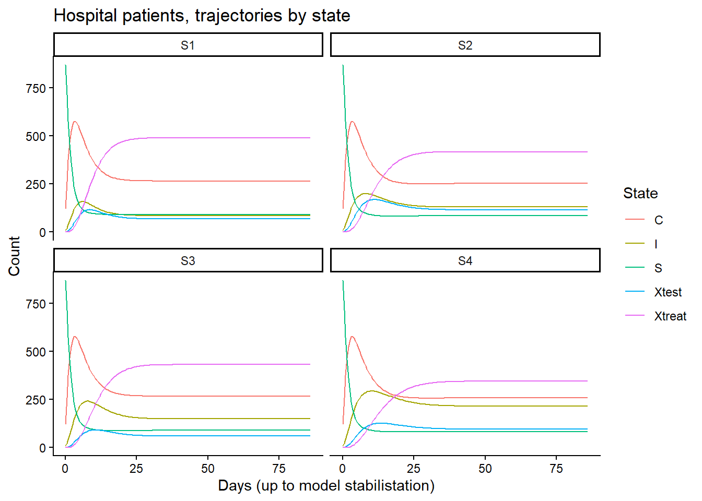
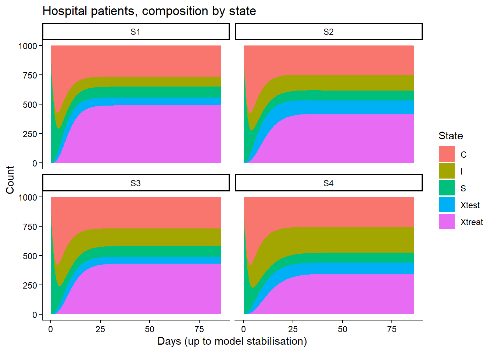
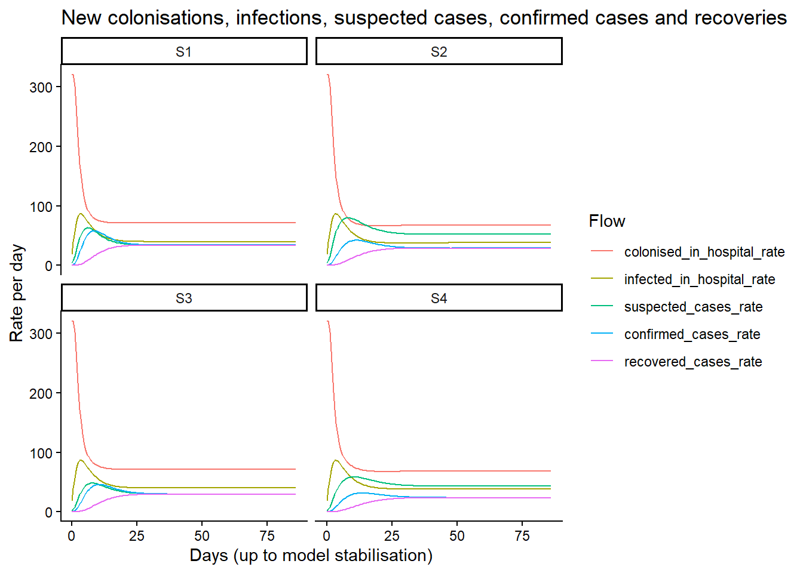
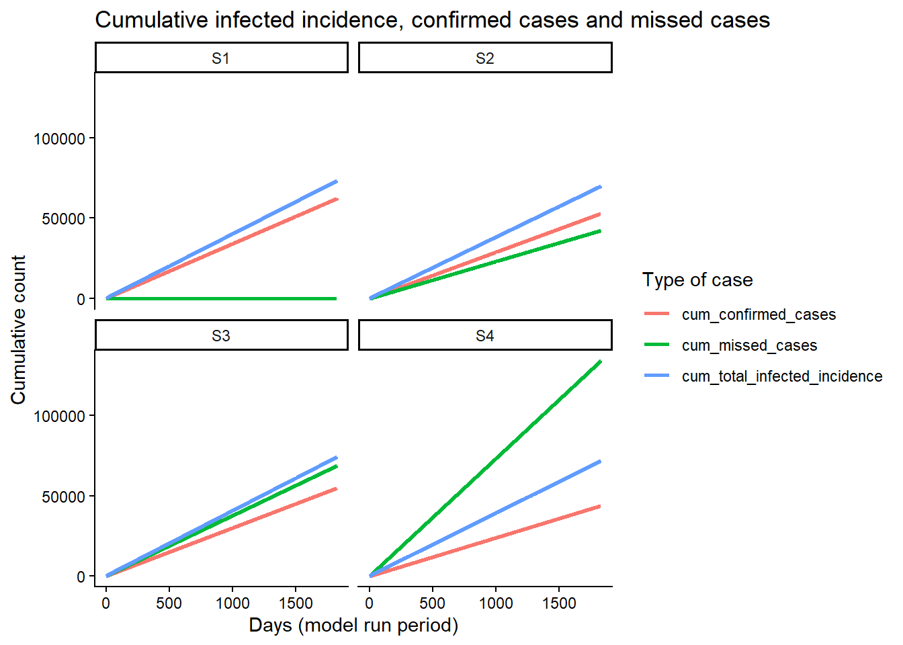
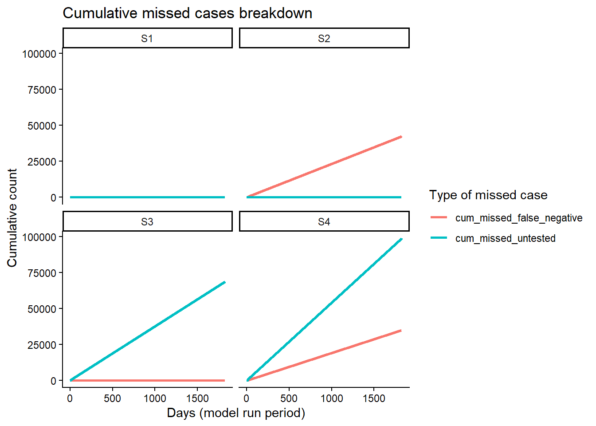
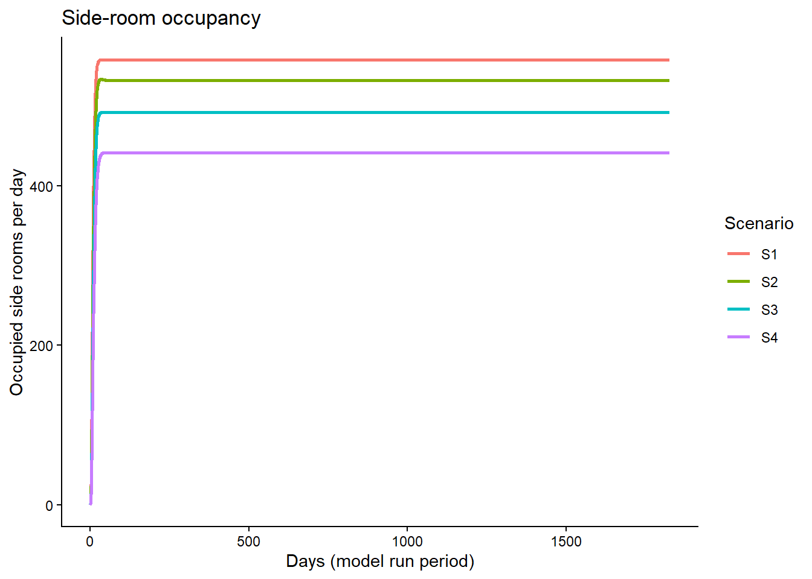
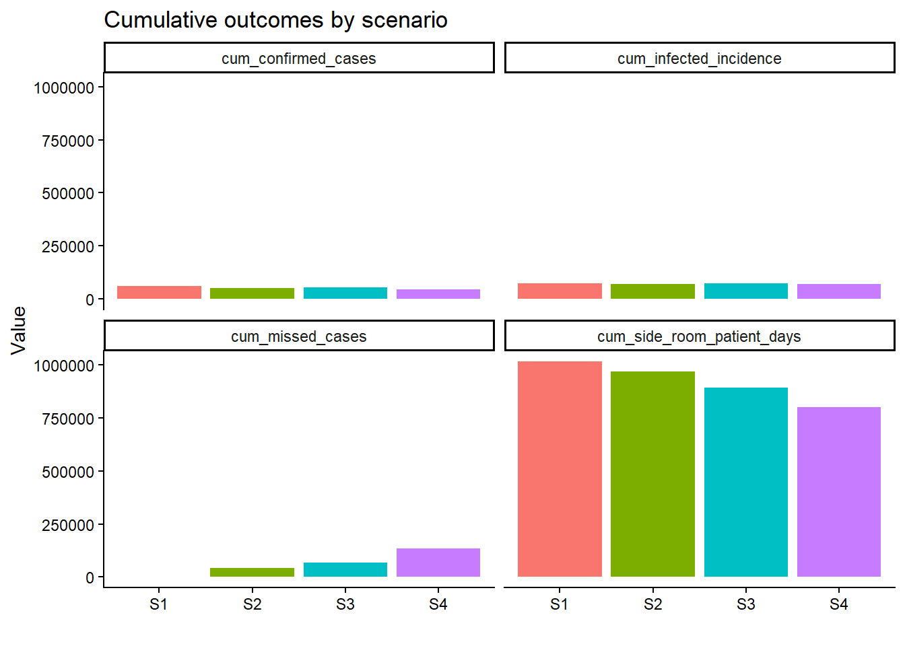

rm(list = ls())
library(tidyverse)
library(deSolve)
library(scales)
options(scipen = 1000)
dir.create("Outputs", showWarnings = FALSE, recursive = TRUE)
source("Scripts/Model1_ODE_Functions.R")
source("Scripts/Model1_ODE_Parameters.R")Model 1A ODE Run
1) Introduction
This script runs the ODE model for Model 1, which simulates the transmission dynamics of a healthcare-associated pathogen within a hospital setting. The model tracks the flow of patients through various states of colonisation and infection, as well as the impact of testing and isolation practices on case detection and missed cases.
This script uses the ODE function defined in “Model1_ODE_Functions.R” and the parameter sets defined in “Model1_ODE_Parameters.R” to run multiple scenarios (S1-S4) and generates outputs including time series of model states and flows, annual summaries, stabilisation assessments, and final cumulative outcomes. The outputs are saved as CSV files in the “Outputs” directory and key results are also presented in tables and plots.

The model compartments are:
- S (Susceptible): Not colonised or infected
- C (Colonised): Carrying the pathogen but not infected
- I (Infected): Showing symptoms caused by the pathogen
- Xtest (Suspected cases): Isolated or on a general ward (depending on whether isolate_before_test is TRUE or FALSE), awaiting test result
- Xtreat (Confirmed cases): Isolated and receiving treatment, awaiting recovery & discharge or return to a general ward
- D: Dead: cumulative count of deaths (absorbing state)
The control variables for scenarios (with default values set in the parameters script) are:
- isolate_before_test: Whether patients are isolated while awaiting test results (TRUE/FALSE)
- prop_I_suspected: Proportion of infected patients who are identified as suspected cases and tested
- test_sens: Sensitivity of the diagnostic test (proportion of infected cases that test positive)
- test_turnaround: Time in days between test administration and result availability, plus the time required to transfer a patient to a side room if isolate_before_test = TRUE
2) Initial setup
3) Model settings
Set the model run settings (total model run time and time step) here. Use the validate_run_settings() function to check that the settings are consistent (e.g. burn-in period is less than total model time, time step is positive and less than total model time).
The ODE solver will produce outputs at every time step. The ODE outputs are counts for each model compartment (or “state”) and rates per day for flows between compartments, admissions and discharges, where:
- Per-step flow quantity = rate_per_day * time_step;
- Annual totals = sum(per-step quantities within each year);
- Cumulative totals = sum(per-step quantities across the whole model run).
run_settings <- list(
# total model run time in days (e.g. 365*5 for 5 years)
model_time = 365 * 5,
# time step in days between ODE solver output points (e.g. 0.5 for half-day steps)
time_step = 0.5
)
validate_run_settings(run_settings$model_time,
run_settings$time_step)
model_time <- run_settings$model_time
time_step <- run_settings$time_step
mod.t <- seq(0, model_time, by = time_step)4) Initial conditions
S0 <- 870
C0 <- 120
I0 <- 10
Xtest0 <- 0
Xtreat0 <- 0
D0 <- 0
mod.init <- c(
S = S0,
C = C0,
I = I0,
Xtest = Xtest0,
Xtreat = Xtreat0,
D = D0
)5) Define scenarios
Set values for the scenario control variables, for four scenarios.
Run the ‘make_mod_parms()’ function to create a list of model parameters for each scenario, which will be passed to the ODE solver. The function will also check that the control variable values are valid (e.g. proportions between 0 and 1, test turnaround time non-negative).
# Baseline (S1)
mod.parms.S1 <- make_mod_parms(
isolate_before_test = TRUE,
prop_I_suspected = 1.00,
test_sens = 1.00,
test_turnaround = 2,
scenario_label = "S1"
)
# Reduced test sensitivity (S2)
mod.parms.S2 <- make_mod_parms(
isolate_before_test = TRUE,
prop_I_suspected = 1.00,
test_sens = 0.50,
test_turnaround = 2,
scenario_label = "S2"
)
# Reduced case identification (S3)
mod.parms.S3 <- make_mod_parms(
isolate_before_test = TRUE,
prop_I_suspected = 0.50,
test_sens = 1.00,
test_turnaround = 2,
scenario_label = "S3"
)
# Reduced sensitivity and identification (S4)
mod.parms.S4 <- make_mod_parms(
isolate_before_test = TRUE,
prop_I_suspected = 0.50,
test_sens = 0.50,
test_turnaround = 2,
scenario_label = "S4"
)
scenario_parms <- list(S1 = mod.parms.S1,
S2 = mod.parms.S2,
S3 = mod.parms.S3,
S4 = mod.parms.S4)
all_parms <- bind_rows(
S1 = as_tibble(mod.parms.S1),
S2 = as_tibble(mod.parms.S2),
S3 = as_tibble(mod.parms.S3),
S4 = as_tibble(mod.parms.S4),
.id = "scenario"
)
write_csv(all_parms, "Outputs/model_parameters_all_scenarios.csv")6) Run scenarios
scenario_raw <- lapply(scenario_parms, run_scenario)
scenario_post <- Map(
f = function(df, parms) {
df %>%
add_flow_quantities(time_step = time_step)
},
df = scenario_raw,
parms = scenario_parms
)
walk2(scenario_post, names(scenario_post), ~ write_csv(.x, paste0("Outputs/solution_", .y, ".csv")))7) Annual summary tables
annual_summary_all <- bind_rows(
make_annual_summary(scenario_post$S1, "S1"),
make_annual_summary(scenario_post$S2, "S2"),
make_annual_summary(scenario_post$S3, "S3"),
make_annual_summary(scenario_post$S4, "S4")
)
write_csv(annual_summary_all, "Outputs/annual_summary_all.csv")
knitr::kable(annual_summary_all, caption = "Annual summary (post burn-in period)")| scenario | year | annual_colonised_incidence | annual_infected_incidence | annual_suspected_cases | annual_confirmed_cases | annual_missed_cases | annual_missed_untested | annual_missed_false_negative | annual_recovered_cases | annual_deaths_infected | annual_deaths_suspected_cases | annual_deaths_confirmed_cases | annual_total_deaths | annual_side_room_patient_days |
|---|---|---|---|---|---|---|---|---|---|---|---|---|---|---|
| S1 | 1 | 29371.88 | 14944.32 | 12661.02 | 12574.087 | 0.000 | 0.00 | 0.000 | 12021.636 | 22.72276 | 18.05340 | 62.41106 | 122.3948 | 199461.9 |
| S1 | 2 | 28442.88 | 14581.77 | 12418.39 | 12400.581 | 0.000 | 0.00 | 0.000 | 12336.536 | 22.28731 | 17.80429 | 64.04588 | 122.7572 | 203680.9 |
| S1 | 3 | 28442.88 | 14581.77 | 12418.39 | 12400.581 | 0.000 | 0.00 | 0.000 | 12336.536 | 22.28731 | 17.80429 | 64.04588 | 122.7572 | 203680.9 |
| S1 | 4 | 28442.88 | 14581.77 | 12418.39 | 12400.581 | 0.000 | 0.00 | 0.000 | 12336.536 | 22.28731 | 17.80429 | 64.04588 | 122.7572 | 203680.9 |
| S1 | 5 | 28442.88 | 14581.77 | 12418.39 | 12400.581 | 0.000 | 0.00 | 0.000 | 12336.536 | 22.28731 | 17.80429 | 64.04588 | 122.7572 | 203680.9 |
| S2 | 1 | 28019.64 | 14259.39 | 19281.99 | 10630.560 | 8504.448 | 0.00 | 8504.448 | 10161.169 | 34.60545 | 30.52591 | 52.75233 | 136.0979 | 189859.2 |
| S2 | 2 | 27078.79 | 13884.25 | 19007.23 | 10542.755 | 8434.204 | 0.00 | 8434.204 | 10488.304 | 34.11233 | 30.27378 | 54.45067 | 136.4499 | 194251.4 |
| S2 | 3 | 27078.79 | 13884.25 | 19007.23 | 10542.755 | 8434.204 | 0.00 | 8434.204 | 10488.304 | 34.11233 | 30.27378 | 54.45067 | 136.4499 | 194251.4 |
| S2 | 4 | 27078.79 | 13884.25 | 19007.23 | 10542.755 | 8434.204 | 0.00 | 8434.204 | 10488.304 | 34.11233 | 30.27378 | 54.45067 | 136.4499 | 194251.4 |
| S2 | 5 | 27078.79 | 13884.25 | 19007.23 | 10542.755 | 8434.204 | 0.00 | 8434.204 | 10488.304 | 34.11233 | 30.27378 | 54.45067 | 136.4499 | 194251.4 |
| S3 | 1 | 29721.33 | 15124.20 | 11110.25 | 11034.075 | 13887.812 | 13887.81 | 0.000 | 10547.467 | 39.87919 | 15.84231 | 54.75782 | 129.7664 | 175006.4 |
| S3 | 2 | 28778.59 | 14756.19 | 10943.35 | 10927.656 | 13679.182 | 13679.18 | 0.000 | 10871.218 | 39.28011 | 15.68952 | 56.43859 | 130.1026 | 179488.0 |
| S3 | 3 | 28778.59 | 14756.19 | 10943.35 | 10927.656 | 13679.182 | 13679.18 | 0.000 | 10871.218 | 39.28011 | 15.68952 | 56.43859 | 130.1026 | 179488.0 |
| S3 | 4 | 28778.59 | 14756.19 | 10943.35 | 10927.656 | 13679.182 | 13679.18 | 0.000 | 10871.218 | 39.28011 | 15.68952 | 56.43859 | 130.1026 | 179488.0 |
| S3 | 5 | 28778.59 | 14756.19 | 10943.35 | 10927.656 | 13679.182 | 13679.18 | 0.000 | 10871.218 | 39.28011 | 15.68952 | 56.43859 | 130.1026 | 179488.0 |
| S4 | 1 | 28749.48 | 14633.21 | 15896.99 | 8764.234 | 26882.630 | 19871.24 | 7011.387 | 8375.448 | 57.06076 | 25.16671 | 43.48165 | 144.2204 | 156500.9 |
| S4 | 2 | 27788.43 | 14251.10 | 15752.64 | 8737.527 | 26680.820 | 19690.80 | 6990.022 | 8692.400 | 56.54261 | 25.09002 | 45.12713 | 144.6611 | 160989.9 |
| S4 | 3 | 27788.43 | 14251.10 | 15752.64 | 8737.527 | 26680.820 | 19690.80 | 6990.022 | 8692.400 | 56.54261 | 25.09002 | 45.12713 | 144.6611 | 160989.9 |
| S4 | 4 | 27788.43 | 14251.10 | 15752.64 | 8737.527 | 26680.820 | 19690.80 | 6990.022 | 8692.400 | 56.54261 | 25.09002 | 45.12713 | 144.6611 | 160989.9 |
| S4 | 5 | 27788.43 | 14251.10 | 15752.64 | 8737.527 | 26680.820 | 19690.80 | 6990.022 | 8692.400 | 56.54261 | 25.09002 | 45.12713 | 144.6611 | 160989.9 |
8) Stabilisation summary (states + flows)
stability_all <- bind_rows(
stabilisation_summary(scenario_post$S1, "S1"),
stabilisation_summary(scenario_post$S2, "S2"),
stabilisation_summary(scenario_post$S3, "S3"),
stabilisation_summary(scenario_post$S4, "S4")
)
# Find the longest stabilisation period among the scenarios
longest_stabilisation <- max(stability_all$stabilisation_day, na.rm = TRUE)
write_csv(stability_all,
"Outputs/stabilisation_summary_states_flows.csv")
knitr::kable(stability_all, caption = "Stabilisation: model states and flows")| scenario | stabilisation_day | tolerance | consecutive_days | stabilised | S | C | I | Xtest | Xtreat | D | colonised_in_hospital_rate | admitted_colonised_rate | decolonised_in_hospital_rate | infected_in_hospital_rate | admitted_infected_rate | suspected_cases_rate | missed_untested_cases_rate | confirmed_cases_rate | missed_false_negative_cases_rate | recovered_cases_rate | discharges_susceptible_rate | discharges_colonised_rate | discharges_infected_rate | discharges_recovered_rate | deaths_susceptible_rate | deaths_colonised_rate | deaths_infected_rate | deaths_suspected_cases_rate | deaths_confirmed_cases_rate | side_room_patient_days | N | lambda |
|---|---|---|---|---|---|---|---|---|---|---|---|---|---|---|---|---|---|---|---|---|---|---|---|---|---|---|---|---|---|---|---|---|
| S1 | 57.0 | 0.0001 | 10 | TRUE | 91.38620 | 265.5262 | 85.05725 | 67.94813 | 490.0823 | 18.68680 | 71.26516 | 6.660545 | 2.655262 | 39.82892 | 0.1211008 | 34.02290 | 0.00000 | 33.97406 | 0.00000 | 33.79878 | 12.18483 | 35.40349 | 5.866017 | 6.759755 | 0.0130617 | 0.0379513 | 0.0610610 | 0.0487787 | 0.1754684 | 558.0304 | 1000 | 0.7798241 |
| S2 | 75.0 | 0.0001 | 10 | TRUE | 84.82588 | 252.7932 | 130.18654 | 115.53665 | 416.6578 | 27.55521 | 67.57595 | 6.612660 | 2.527932 | 37.91897 | 0.1202302 | 52.07461 | 0.00000 | 28.88416 | 23.10733 | 28.73502 | 11.31012 | 33.70575 | 8.978382 | 5.747004 | 0.0121240 | 0.0361314 | 0.0934585 | 0.0829416 | 0.1491796 | 532.1944 | 1000 | 0.7966430 |
| S3 | 68.5 | 0.0001 | 10 | TRUE | 89.68292 | 268.6605 | 149.90854 | 59.87730 | 431.8707 | 23.95428 | 71.75809 | 7.087402 | 2.686605 | 40.29908 | 0.1288619 | 29.98171 | 37.47713 | 29.93865 | 0.00000 | 29.78419 | 11.95772 | 35.82141 | 10.338520 | 5.956837 | 0.0128183 | 0.0383993 | 0.1076165 | 0.0429848 | 0.1546264 | 491.7480 | 1000 | 0.8001311 |
| S4 | 86.5 | 0.0001 | 10 | TRUE | 83.72543 | 259.4173 | 215.78890 | 95.75321 | 345.3151 | 33.70594 | 68.89547 | 7.237302 | 2.594173 | 38.91260 | 0.1315873 | 43.15778 | 53.94723 | 23.93830 | 19.15064 | 23.81484 | 11.16339 | 34.58898 | 14.881993 | 4.762968 | 0.0119668 | 0.0370782 | 0.1549108 | 0.0687394 | 0.1236362 | 441.0684 | 1000 | 0.8228740 |
9) Negative values checks
neg_tables <- lapply(scenario_post, negative_value_rows)
walk2(neg_tables, names(neg_tables), ~ write_csv(.x, paste0("Outputs/negative_rows_", .y, ".csv")))10) Final cumulative outcomes table
final_outcomes <- bind_rows(lapply(names(scenario_post), function(nm) {
last <- scenario_post[[nm]] %>% filter(time == max(time)) %>% slice(1)
tibble(
scenario = nm,
final_S = last$S,
final_C = last$C,
final_I = last$I,
final_Xtest = last$Xtest,
final_Xtreat = last$Xtreat,
cum_colonised_incidence = last$cum_total_colonised_incidence,
cum_infected_incidence = last$cum_total_infected_incidence,
cum_suspected_cases = last$cum_suspected_cases,
cum_confirmed_cases = last$cum_confirmed_cases,
cum_missed_cases = last$cum_missed_cases,
cum_missed_untested = last$cum_missed_untested,
cum_missed_false_negative = last$cum_missed_false_negative,
cum_recovered_cases = last$cum_recovered_cases,
cum_deaths_infected = last$cum_deaths_infected,
cum_deaths_suspected_cases = last$cum_deaths_suspected_cases,
cum_deaths_confirmed_cases = last$cum_deaths_confirmed_cases,
cum_total_deaths = last$cum_total_deaths,
cum_side_room_patient_days = last$cum_side_room_patient_days
)
}))
base_row <- final_outcomes %>% filter(scenario == "S1")
final_outcomes_vs_base <- final_outcomes %>%
mutate(
d_S_vs_S1 = final_S - base_row$final_S,
d_C_vs_S1 = final_C - base_row$final_C,
d_I_vs_S1 = final_I - base_row$final_I,
d_Xtest_vs_S1 = final_Xtest - base_row$final_Xtest,
d_Xtreat_vs_S1 = final_Xtreat - base_row$final_Xtreat,
d_colonised_incidence_vs_S1 = cum_colonised_incidence - base_row$cum_colonised_incidence,
d_infected_incidence_vs_S1 = cum_infected_incidence - base_row$cum_infected_incidence,
d_confirmed_cases_vs_S1 = cum_confirmed_cases - base_row$cum_confirmed_cases,
d_suspected_cases_vs_S1 = cum_suspected_cases - base_row$cum_suspected_cases,
d_missed_cases_vs_S1 = cum_missed_cases - base_row$cum_missed_cases,
d_missed_untested_vs_S1 = cum_missed_untested - base_row$cum_missed_untested,
d_missed_false_negative_vs_S1 = cum_missed_false_negative - base_row$cum_missed_false_negative,
d_recovered_cases_vs_S1 = cum_recovered_cases - base_row$cum_recovered_cases,
d_deaths_infected_vs_S1 = cum_deaths_infected - base_row$cum_deaths_infected,
d_deaths_suspected_cases_vs_S1 = cum_deaths_suspected_cases - base_row$cum_deaths_suspected_cases,
d_deaths_confirmed_cases_vs_S1 = cum_deaths_confirmed_cases - base_row$cum_deaths_confirmed_cases,
d_total_deaths_vs_S1 = cum_total_deaths - base_row$cum_total_deaths,
d_side_room_days_vs_S1 = cum_side_room_patient_days - base_row$cum_side_room_patient_days
) %>%
select(scenario, starts_with("d_"))
write_csv(final_outcomes,
"Outputs/final_outcomes_all.csv")
knitr::kable(final_outcomes, caption = "Model end states and cumulative flows (post burn-in period)")| scenario | final_S | final_C | final_I | final_Xtest | final_Xtreat | cum_colonised_incidence | cum_infected_incidence | cum_suspected_cases | cum_confirmed_cases | cum_missed_cases | cum_missed_untested | cum_missed_false_negative | cum_recovered_cases | cum_deaths_infected | cum_deaths_suspected_cases | cum_deaths_confirmed_cases | cum_total_deaths | cum_side_room_patient_days |
|---|---|---|---|---|---|---|---|---|---|---|---|---|---|---|---|---|---|---|
| S1 | 91.38619 | 265.5264 | 85.05744 | 67.94839 | 490.0815 | 143143.4 | 73271.42 | 62334.56 | 62176.41 | 0.00 | 0.00 | 0.00 | 61367.78 | 111.8720 | 89.27055 | 318.5946 | 613.4237 | 1014185.6 |
| S2 | 84.82573 | 252.7921 | 130.18652 | 115.53704 | 416.6586 | 136334.8 | 69796.39 | 95310.92 | 52801.58 | 42241.26 | 0.00 | 42241.26 | 52114.38 | 171.0548 | 151.62103 | 270.5550 | 681.8977 | 966864.9 |
| S3 | 89.68286 | 268.6604 | 149.90885 | 59.87757 | 431.8703 | 144835.7 | 74148.97 | 54883.63 | 54744.70 | 68604.54 | 68604.54 | 0.00 | 54032.34 | 196.9996 | 78.60037 | 280.5122 | 650.1769 | 892958.3 |
| S4 | 83.72531 | 259.4169 | 215.78957 | 95.75372 | 345.3145 | 139903.2 | 71637.63 | 78907.55 | 43714.34 | 133605.91 | 98634.44 | 34971.47 | 43145.05 | 283.2312 | 125.52680 | 223.9902 | 722.8649 | 800460.5 |
write_csv(final_outcomes_vs_base,
"Outputs/final_outcomes_vs_base.csv")
knitr::kable(final_outcomes_vs_base, caption = "Difference in model end states and cumulative flows vs base scenario S1 (post burn-in period)")| scenario | d_S_vs_S1 | d_C_vs_S1 | d_I_vs_S1 | d_Xtest_vs_S1 | d_Xtreat_vs_S1 | d_colonised_incidence_vs_S1 | d_infected_incidence_vs_S1 | d_confirmed_cases_vs_S1 | d_suspected_cases_vs_S1 | d_missed_cases_vs_S1 | d_missed_untested_vs_S1 | d_missed_false_negative_vs_S1 | d_recovered_cases_vs_S1 | d_deaths_infected_vs_S1 | d_deaths_suspected_cases_vs_S1 | d_deaths_confirmed_cases_vs_S1 | d_total_deaths_vs_S1 | d_side_room_days_vs_S1 |
|---|---|---|---|---|---|---|---|---|---|---|---|---|---|---|---|---|---|---|
| S1 | 0.000000 | 0.000000 | 0.00000 | 0.000000 | 0.00000 | 0.000 | 0.0000 | 0.000 | 0.000 | 0.00 | 0.00 | 0.00 | 0.000 | 0.00000 | 0.00000 | 0.00000 | 0.00000 | 0.00 |
| S2 | -6.560464 | -12.734364 | 45.12908 | 47.588645 | -73.42290 | -6808.600 | -3475.0249 | -9374.835 | 32976.362 | 42241.26 | 0.00 | 42241.26 | -9253.393 | 59.18277 | 62.35048 | -48.03956 | 68.47401 | -47320.72 |
| S3 | -1.703327 | 3.134001 | 64.85141 | -8.070823 | -58.21126 | 1692.291 | 877.5595 | -7431.714 | -7450.926 | 68604.54 | 68604.54 | 0.00 | -7335.441 | 85.12761 | -10.67017 | -38.08239 | 36.75317 | -121227.32 |
| S4 | -7.660878 | -6.109546 | 130.73213 | 27.805328 | -144.76704 | -3240.187 | -1633.7849 | -18462.072 | 16572.990 | 133605.91 | 98634.44 | 34971.47 | -18222.731 | 171.35919 | 36.25626 | -94.60442 | 109.44120 | -213725.06 |
11) Plots
# Set the colour palette for the states and flows to be consistent across plots
colour_palette <- c(
"S" = "#1b9e77",
"C" = "#d95f02",
"I" = "#7570b3",
"Xtest" = "#e7298a",
"Xtreat" = "#66a61e",
"colonised_in_hospital_rate" = "#1b9e77",
"admitted_colonised_rate" = "#1b9e77",
"discharges_colonised_rate" = "#1b9e77",
"deaths_colonised_rate" = "#1b9e77",
"infected_in_hospital_rate" = "#d95f02",
"admitted_infected_rate" = "#d95f02",
"total_infected_incidence_rate" = "#d95f02",
"suspected_cases_rate" = "#7570b3",
"missed_untested_cases_rate" = "#e7298a",
"deaths_suspected_cases_rate" = "#1b9e77",
"confirmed_cases_rate" = "#e7298a",
"missed_false_negative_cases_rate" = "#e7298a",
"recovered_cases_rate" = "#66a61e"
)
plot_long_states <- bind_rows(lapply(names(scenario_post), function(nm) {
scenario_raw[[nm]] %>%
select(time, S, C, I, Xtest, Xtreat) %>%
pivot_longer(
cols = c(S, C, I, Xtest, Xtreat),
names_to = "State",
values_to = "Count"
) %>%
mutate(
scenario = nm,
# Set the order of the states for consistent plotting
state = factor(State, levels = c("S", "C", "I", "Xtest", "Xtreat"))
) %>%
filter(time < longest_stabilisation)
}))
p_states_line <- ggplot(plot_long_states, aes(time, Count, color = State)) +
geom_line() +
facet_wrap(
~ scenario
#, scales = "free_y"
) +
theme_classic() +
labs(
title = "Hospital patients, trajectories by state",
x = "Days (up to model stabilistation)",
y = "Count"
)
ggsave(
"Outputs/plot_states_lines_facet.png",
p_states_line,
width = 12,
height = 8,
dpi = 300
)
p_states_area <- ggplot(plot_long_states, aes(time, Count, fill = State)) +
geom_area() +
facet_wrap(
~ scenario
#, scales = "free_y"
) +
theme_classic() +
labs(title = "Hospital patients, composition by state",
x = "Days (up to model stabilisation)",
y = "Count")
ggsave(
"Outputs/plot_states_area_facet.png",
p_states_area,
width = 12,
height = 8,
dpi = 300
)
plot_long_flows <- bind_rows(lapply(names(scenario_post), function(nm) {
scenario_post[[nm]] %>%
select(
time,
colonised_in_hospital_rate,
admitted_colonised_rate,
decolonised_in_hospital_rate,
infected_in_hospital_rate,
admitted_infected_rate,
total_infected_incidence_rate,
suspected_cases_rate,
confirmed_cases_rate,
missed_untested_cases_rate,
missed_false_negative_cases_rate,
total_missed_cases_rate,
recovered_cases_rate,
discharges_colonised_rate,
discharges_infected_rate,
discharges_recovered_rate,
deaths_infected_rate,
deaths_suspected_cases_rate,
deaths_confirmed_cases_rate,
total_colonised_incidence_rate,
total_admissions_rate,
total_discharges_rate,
total_deaths_rate,
total_exits_rate,
side_room_patient_days,
cum_total_colonised_incidence,
cum_total_infected_incidence,
cum_suspected_cases,
cum_confirmed_cases,
cum_missed_cases,
cum_missed_untested,
cum_missed_false_negative,
cum_side_room_patient_days
) %>%
mutate(scenario = nm)
}))
p_daily_flows <- plot_long_flows %>%
filter(time < longest_stabilisation) %>%
select(
time,
scenario,
colonised_in_hospital_rate,
infected_in_hospital_rate,
suspected_cases_rate,
confirmed_cases_rate,
recovered_cases_rate
) %>%
pivot_longer(
cols = -c(time, scenario),
names_to = "Flow",
values_to = "Value"
) %>%
# Set the order of the flows for consistent plotting
mutate(
Flow = factor(
Flow,
levels = c(
"colonised_in_hospital_rate",
"infected_in_hospital_rate",
"suspected_cases_rate",
"confirmed_cases_rate",
"recovered_cases_rate"
)
)) %>%
ggplot(aes(time, Value, color = Flow)) +
geom_line() +
facet_wrap(
~ scenario
#, scales = "free_y"
) +
theme_classic() +
labs(title = "New colonisations, infections, suspected cases, confirmed cases and recoveries",
x = "Days (up to model stabilisation)",
y = "Rate per day")
ggsave(
"Outputs/plot_daily_flows_facet.png",
p_daily_flows,
width = 12,
height = 8,
dpi = 300
)
p_cum_cases <- plot_long_flows %>%
select(
time,
scenario,
cum_total_infected_incidence,
cum_confirmed_cases,
cum_missed_cases
) %>%
pivot_longer(
cols = -c(time, scenario),
names_to = "series",
values_to = "value"
) %>%
ggplot(aes(time, value, color = series)) +
geom_line(linewidth = 1) +
facet_wrap(
~ scenario
#, scales = "free_y"
) +
theme_classic() +
labs(title = "Cumulative infected incidence, confirmed cases and missed cases",
x = "Days (model run period)",
y = "Cumulative count",
color = "Type of case")
ggsave(
"Outputs/plot_cumulative_cases_facet.png",
p_cum_cases,
width = 12,
height = 8,
dpi = 300
)
p_missed_breakdown <- plot_long_flows %>%
select(time,
scenario,
cum_missed_untested,
cum_missed_false_negative) %>%
pivot_longer(
cols = -c(time, scenario),
names_to = "missed_type",
values_to = "value"
) %>%
ggplot(aes(time, value, color = missed_type)) +
geom_line(linewidth = 1) +
facet_wrap(
~ scenario
#, scales = "free_y"
) +
theme_classic() +
labs(title = "Cumulative missed cases breakdown",
x = "Days (model run period)",
y = "Cumulative count",
color = "Type of missed case")
ggsave(
"Outputs/plot_cumulative_missed_breakdown_facet.png",
p_missed_breakdown,
width = 12,
height = 8,
dpi = 300
)
p_side_room <- plot_long_flows %>%
ggplot(aes(time, side_room_patient_days, color = scenario)) +
geom_line(linewidth = 1) +
theme_classic() +
labs(title = "Side-room occupancy",
x = "Days (model run period)",
y = "Occupied side rooms per day",
color = "Scenario")
ggsave(
"Outputs/plot_side_room_occupancy.png",
p_side_room,
width = 10,
height = 6,
dpi = 300
)
final_long <- final_outcomes %>%
select(
scenario,
cum_infected_incidence,
cum_confirmed_cases,
cum_missed_cases,
cum_side_room_patient_days
) %>%
pivot_longer(-scenario, names_to = "metric", values_to = "value")
p_final_bars <- ggplot(final_long, aes(scenario, value, fill = scenario)) +
geom_col() +
facet_wrap(
~ metric
#, scales = "free_y"
) +
theme_classic() +
theme(legend.position = "none") +
labs(title = "Cumulative outcomes by scenario",
x = "",
y = "Value")
ggsave(
"Outputs/plot_cumulative_outcomes_bars.png",
p_final_bars,
width = 12,
height = 8,
dpi = 300
)
# Create a small summary table of scenario control parameters
scenario_summary <- bind_rows(lapply(names(scenario_parms), function(nm) {
p <- scenario_parms[[nm]]
tibble(
Scenario = nm,
`Isolate before test` = p$isolate_before_test,
`Prop. suspected cases identified` = p$prop_I_suspected,
`Test sensitivity` = p$test_sens,
`Test turnaround (days)` = p$test_turnaround
)
}))
# Print it in the HTML document
knitr::kable(scenario_summary, caption = "Reference: Scenario Control Parameters")| Scenario | Isolate before test | Prop. suspected cases identified | Test sensitivity | Test turnaround (days) |
|---|---|---|---|---|
| S1 | TRUE | 1.0 | 1.0 | 2 |
| S2 | TRUE | 1.0 | 0.5 | 2 |
| S3 | TRUE | 0.5 | 1.0 | 2 |
| S4 | TRUE | 0.5 | 0.5 | 2 |
# Optionally save it to your Outputs folder
write_csv(scenario_summary, "Outputs/scenario_control_parameters.csv")
p_states_line
p_states_area
p_daily_flows
p_cum_cases
p_missed_breakdown
p_side_room
p_final_bars